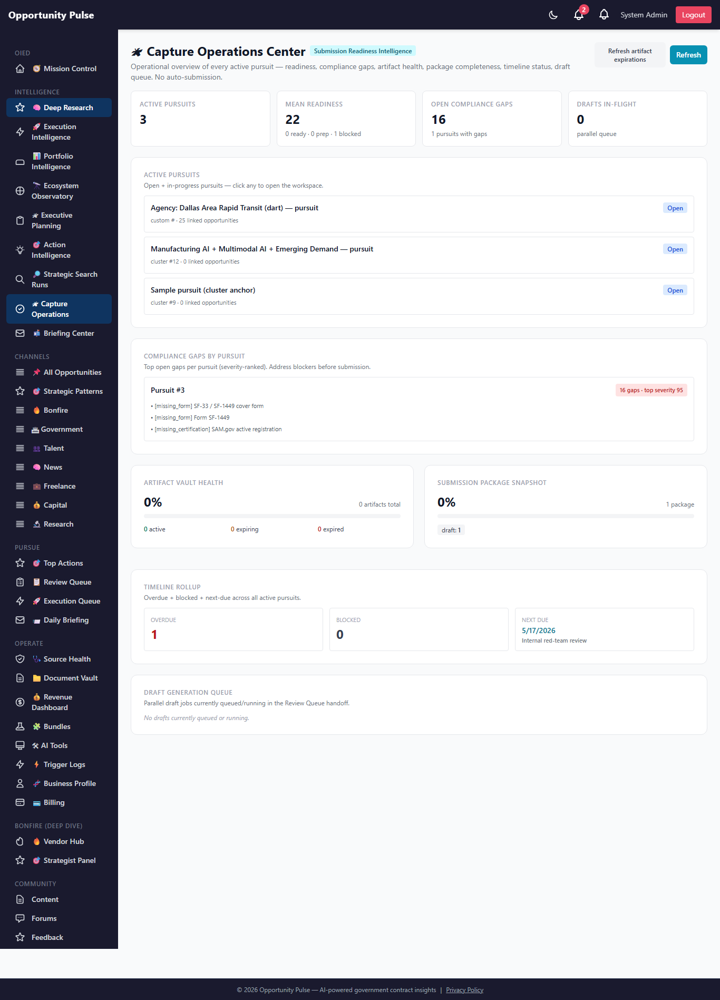
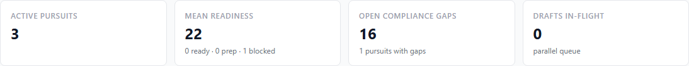
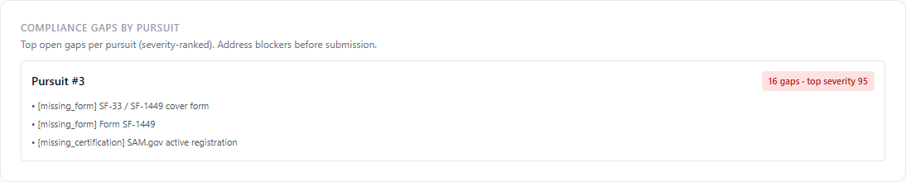
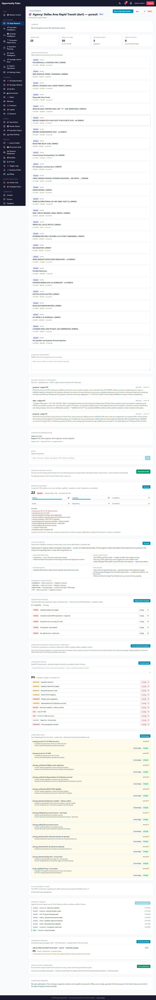
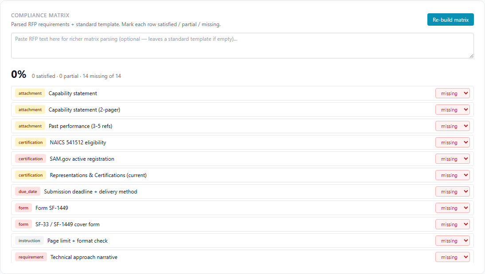
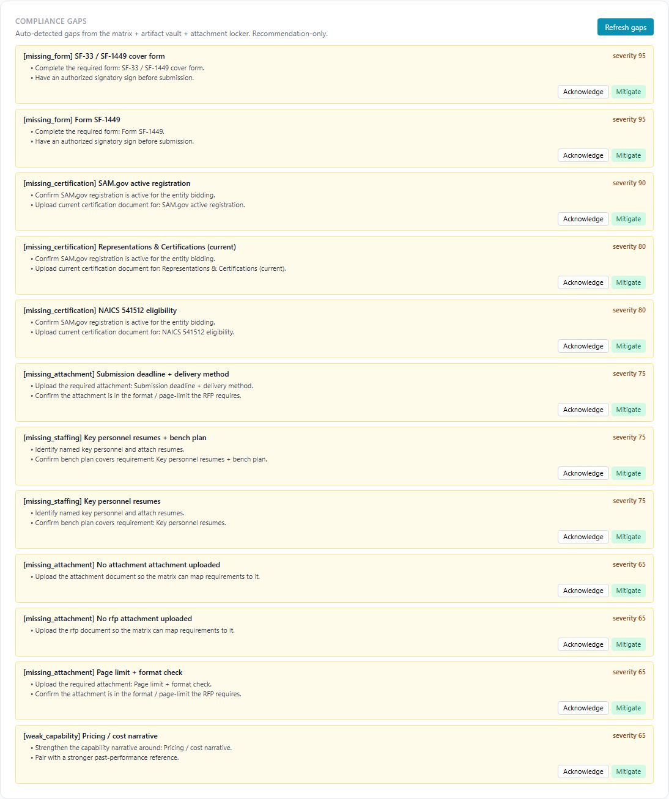
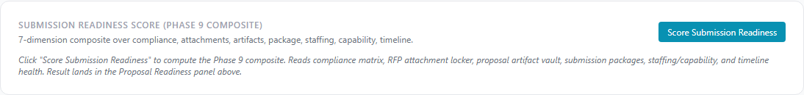
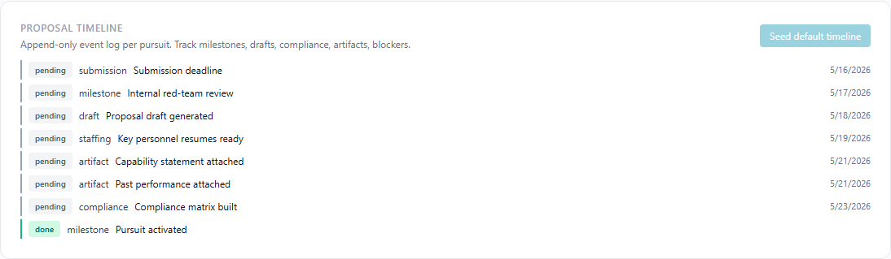
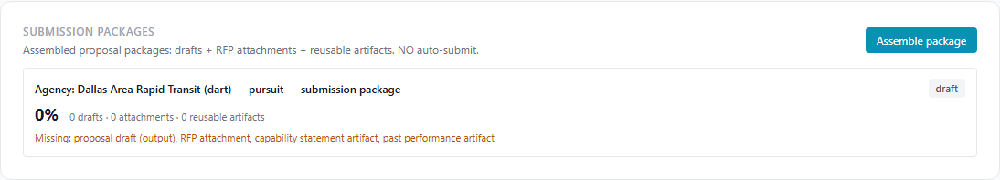
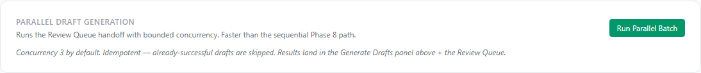

Deep Research Intelligence Engine — Phase 9
Submission Readiness + Compliance Intelligence · 2026-05-16 · commit e9ff863 · all 1,961 backend tests passing
Phase 8 turned strategic intelligence into pursuit activation. Phase 9
closes the loop to submission readiness: an RFP
attachment locker, a reusable proposal artifact vault, a deterministic
compliance matrix generator, a submission package assembler, a
pursuit-aware proposal context injector, a parallel draft generation
queue, a proposal readiness timeline, a compliance gap detector, and
the new Capture Operations Center dashboard at
/admin/deep-research/capture-ops.
All measure-only — no auto-submit, no auto-bid, no auto-sign.
On the seeded prod run for pursuit #3: built a compliance matrix parsing a sample RFP ("Submit via SAM.gov by 30 days. Include capability statement and SF-1449. Key personnel resumes required. NAICS 541512.") → 14 matrix items; seeded the default 8-event proposal timeline; detected 16 compliance gaps; assembled a submission package; scored the Phase 9 submission readiness composite at 22 / 100 (blocked, 10 blockers); Capture Ops Center returned 3 active pursuits with mean readiness 22.
8 new tables 10 services 30 new tests 1961 / 1961 passing Capture Operations Center Human-in-the-loop No auto-submission
Strategic evolution
| Phase | Identity | Output of the phase |
|---|---|---|
| 1-2 | Strategic opportunity intelligence | Deep research synthesis |
| 3-4 | Execution + portfolio intelligence | Resource capacity + portfolio prioritization |
| 5-6 | Temporal + adaptive operations | Observatory + adaptive refresh + venture health |
| 7 | Evidence-backed traceability | Traceability layer + action intelligence |
| 7.5-7.6 | Contextual continuity + competing tools | Strategic workspace + market saturation |
| 8 | Strategic capture intelligence | Pursuit activation + capture strategy |
| 9 | Submission readiness intelligence | RFP locker + compliance matrix + submission packaging |
Governance contract — what this phase will and will not do
What Phase 9 IS allowed to do
- Track RFP/amendment/attachment metadata with versioning + tagging + expiration.
- Maintain a reusable artifact vault (resumes, case studies, past performance, etc.) with auto-expiration status detection.
- Parse RFP text deterministically (12+ phrase patterns) into a compliance matrix; fall back to a 10-item default template.
- Assemble a submission package metadata snapshot with a completeness score + a missing-components list.
- Generate drafts in bounded-concurrency parallel mode (default 3, max 8) into the existing Review Queue.
- Compose a pursuit-context block (capture strategy, positioning, linked opps, acceleration assets, readiness blockers) for the actionGenerator.
- Detect compliance gaps and emit severity + recommended actions.
- Track an append-only proposal timeline with overdue auto-detection.
What Phase 9 will NEVER do
- Auto-submit proposals. Submission package status moves to
submittedonly when a human flips the dropdown. - Auto-bid. No procurement portal integration exists.
- Auto-sign anything. No e-signature, no contract execution, no compliance attestations.
- Auto-modify compliance docs. The matrix items are operator-edited; the engine only proposes the initial structure.
- Hide why. Every readiness score persists factors + blockers + accelerators + rationale.
What shipped (10 features)
| # | Feature | Surface |
|---|---|---|
| 1 | Submission Readiness Engine (composite) | submissionReadinessEngine.service — 7 dimensions sum to 100 |
| 2 | RFP Attachment Locker | rfpAttachment.service + locker panel on pursuit |
| 3 | Proposal Artifact Vault | proposalArtifact.service with expiration tracking + suggest-for-context |
| 4 | Compliance Matrix Generator | complianceMatrix.service — 12-pattern RFP parser + default template + roll-up |
| 5 | Submission Package Assembler | submissionPackage.service — drafts + attachments + artifacts → completeness score |
| 6 | Pursuit-Aware Proposal Context Injection | pursuitContextInjector.service — composes prompt-ready block |
| 7 | Parallel Draft Generation | parallelDraftQueue.service — bounded concurrency, retry-safe, idempotent |
| 8 | Proposal Readiness Timeline | proposalTimeline.service — 8-event default + overdue auto-detection |
| 9 | Compliance Gap Intelligence | complianceGap.service — 6 gap kinds × severity + actions |
| 10 | Capture Operations Dashboard | CaptureOpsPage.jsx at /admin/deep-research/capture-ops |
1. Submission Readiness Engine
The Phase 9 composite reads from 7 weighted dimensions:
| Dimension | Weight | What it measures |
|---|---|---|
| Compliance matrix | 25 | Completion % of the parsed RFP matrix |
| Attachment locker | 15 | RFP presence + amendments + supporting docs - expired |
| Artifact vault | 15 | Active capability statements + past performance availability |
| Package readiness | 15 | Best submission package completeness across packages |
| Staffing | 10 | Reuses Phase 8 staffing dimension |
| Capability | 10 | Reuses Phase 8 capability dimension |
| Timeline health | 10 | 100 baseline - overdue × 8 - blocked × 15 |
Classifications: ready (≥80, <3 blockers) / needs_prep (35-79) /
blocked (≥3 blockers OR <35). Persisted into the Phase 8
proposal_readiness_scores table (scope=pursuit) so the
Capture Ops dashboard reads it without a new join.
2. RFP Attachment Locker
Metadata-only registry. Each attachment carries: kind (rfp / amendment / attachment / compliance_doc / supporting / qa_response / past_proposal / other), label, filename, content_ref (URL or future storage key), mime_type, size_bytes, version (auto-bumped on same-label re-upload), tags, related_attachment_ids, expires_at, uploaded_by.
v1 is metadata-only. No file blob storage — operators paste a URL or share-link. Real blob storage lands in Phase 10.
3. Proposal Artifact Vault
Org-wide reusable library — 9 artifact kinds: resume, case_study, past_performance, certification, boilerplate, diagram, capability_statement, reference, template. Each row carries tags + capability_tags + agencies (where this artifact has been used) + reuse_score + times_used + expires_at + status (active / expiring / expired / archived).
The refreshExpirationStatuses helper flips active →
expiring 30 days before expiry, then expiring → expired on the
expiry date. Idempotent, safe to call from the dashboard refresh
button.
suggestForContext({ capabilityTags, agencies, kinds })
surfaces the best matches for a target context — feeds the
submissionPackage assembler when no explicit artifactIds are passed.
4. Compliance Matrix Generator
Deterministic regex-based RFP text parser. 12 phrase patterns recognized:
- Forms: SF-33, SF-1449, SF-330
- Certifications: NAICS code, CAGE code, SAM.gov, security clearance, 8(a) / HUBZone / WOSB / SDVOSB / small business
- Attachments: capability statement, past performance
- Staffing: key personnel
- Due dates + instructions: due-by phrases, page-limit phrases
When no RFP text is supplied, falls back to the 10-item default template (cover form + SAM.gov + reps & certs + capability + past performance + key personnel + technical narrative + pricing + page-limit + deadline).
Items are persisted with status (satisfied / partial / missing / na) and severity (critical / high / normal). Per-item status updates auto-roll-up the parent matrix's completion_pct.
5. Submission Package Assembler
Composes a metadata snapshot for a pursuit: which OpportunityOutput
drafts, which RFP attachments, which reusable proposal artifacts. When
artifactIds aren't supplied, auto-suggests top capability_statement +
past_performance from the vault. Records usage on every included
artifact (times_used bumped) so the vault learns what's
actively reused.
Completeness scoring:
30 pts — ≥1 proposal draft (output) 15 pts — ≥1 RFP attachment 15 pts — ≥1 capability_statement artifact 15 pts — ≥1 past_performance artifact 25 pts — pro-rated to compliance matrix completion % ───────── 100 max
Status workflow: draft → ready →
submitted (the latter is a human-set marker only; no
portal submission happens).
6. Pursuit-Aware Proposal Context Injection
Composes a prompt-ready "## Pursuit Context (Phase 9 injection)" block carrying capture strategy narrative, evaluator priorities, agency pain points, differentiators, recurring agency pattern, linked opportunities (up to 12), suggested acceleration assets (up to 6), and readiness blockers.
The block is exposed at GET /pursuits/:id/context-block
and is intended to be appended to the actionGenerator user prompt
when generating a draft from this pursuit. The actionGenerator
extension itself is deferred — this service produces the
payload; wiring it into the prompt is a small Phase 10 add.
7. Parallel Draft Generation
Replaces Phase 8's sequential Review Queue handoff with a small
in-process concurrency pool. Default 3, max 8. Each linked opportunity
becomes one parallel_draft_jobs row; the pool processes
them with bounded concurrency and records the outcome per job.
Idempotent: already-successful jobs for the same
(pursuit, opportunity, type) are skipped on re-run.
Retry-safe: failures don't abort the batch.
Observable: every job's status + error message + attempt
count is in the table.
Resumable: a fresh batch can re-run only the failed
opportunities from a prior batch by passing skipExisting=true.
8. Proposal Readiness Timeline
Append-only event log per pursuit. 8 event kinds: milestone, draft, compliance, artifact, staffing, blocker, submission, note. 5 statuses: pending, in_progress, done, overdue, blocked.
seedDefaultTimeline({ dueAt }) applies an 8-event default
template anchored to a target deadline:
Pursuit activated (done) Compliance matrix built — due_at = dueAt - 7d Capability statement attached — due_at = dueAt - 5d Past performance attached — due_at = dueAt - 5d Key personnel resumes ready — due_at = dueAt - 3d Proposal draft generated — due_at = dueAt - 2d Internal red-team review — due_at = dueAt - 1d Submission deadline — due_at = dueAt (critical)
refreshOverdueStatuses auto-flips pending events whose
dueAt has passed to overdue.
9. Compliance Gap Intelligence
Six gap kinds with default severity:
| Gap kind | Default severity |
|---|---|
| missing_form | 85 |
| missing_certification | 80 |
| missing_staffing | 75 |
| expired_artifact | 70 |
| missing_attachment | 65 |
| weak_capability | 55 |
Severity is boosted +10 for items flagged critical on the
compliance matrix. Each gap carries 2-3 recommended actions composed
from a per-kind playbook. Status workflow: open → acknowledged → mitigated
/ dismissed (audit-preserved).
10. Capture Operations Dashboard
The new top-level surface at
/admin/deep-research/capture-ops. Read-only composite:
- Active Pursuits — open + in_progress workspaces
- Readiness summary — mean composite + classification distribution
- Compliance gaps by pursuit — severity-ranked, with sample gaps inline
- Artifact health — active vs expiring vs expired with a health %
- Package snapshot — mean completeness + status distribution
- Timeline rollup — overdue + blocked + next-due across pursuits
- Draft queue — in-flight parallel batch jobs
Screen: Capture Operations Center — full page

The new top-level dashboard at /admin/deep-research/capture-ops. All Phase 9 signals roll up here.
Screen: Capture Ops KPIs

Active pursuits · mean readiness with classification distribution · open compliance gaps · drafts in-flight.
Screen: Compliance gaps by pursuit

Severity-ranked. Each card shows the top-3 sample gaps inline so the executive triages without clicking through.
Screen: Pursuit workspace — full page (with Phase 9 panels)

7 new Phase 9 panels added below the Phase 8 panels: Submission Readiness Composite, Compliance Matrix, Compliance Gaps, RFP Locker, Timeline, Submission Packages, Parallel Drafts.
Screen: Compliance Matrix

RFP-text textarea + Build button → 14 items extracted in this example. Each item's status is an inline dropdown that auto-rolls-up the matrix.
Screen: Compliance Gaps (pursuit page)

Per-pursuit gap list with severity pills + recommended actions + Acknowledge / Mitigate inline actions.
Screen: Submission Readiness Composite (Phase 9)

7-dimension composite that adds Phase 9 signals to Phase 8's per-dim scoring. Result lands in the Proposal Readiness panel.
Screen: Proposal Timeline

8-event default template, color-coded left-border by status. Overdue events auto-flip when due_at passes.
Screen: Submission Packages

Assembled drafts + RFP attachments + reusable artifacts with a completeness score + missing-components list. Status stays human-controlled.
Screen: Parallel Draft Generation

Bounded-concurrency pool (default 3, max 8). Idempotent re-runs skip already-successful jobs.
Database schema (Phase 9)
| Table | Purpose |
|---|---|
rfp_attachments | RFP/amendment/supporting doc metadata + versioning + tagging. |
proposal_artifacts | Reusable artifact library (9 kinds) + expiration tracking. |
compliance_matrices | Top-level matrix per pursuit/opportunity + roll-up counts. |
compliance_matrix_items | Per-requirement rows with status + severity. |
submission_packages | Assembled package metadata snapshots. |
proposal_timeline_events | Append-only event log per pursuit. |
compliance_gaps | Detected gaps + severity + actions + status workflow. |
parallel_draft_jobs | Concurrency-pool job audit rows. |
API routes (Phase 9)
GET /capture-ops— dashboard payloadGET|POST /pursuits/:id/rfp-attachments+ summary + PATCH/DELETE per-idGET|POST /proposal-artifacts+ refresh-expirations + PATCH/DELETE per-idGET /pursuits/:id/compliance-matrix+POST .../build+ PATCH per-itemGET|POST /pursuits/:id/submission-packages+ per-id GET/PATCHGET|POST /pursuits/:id/timeline+POST .../seed+ PATCH per-eventGET /pursuits/:id/compliance-gaps+POST .../refresh+ PATCH per-idPOST /pursuits/:id/submission-readiness/scorePOST|GET /pursuits/:id/parallel-draftsGET /pursuits/:id/context-block?opportunityId=...
Files changed
Added — backend
backend/src/migrations/20260516000001-deep-research-phase-9.js(8 tables)- 8 new Sequelize models
- 10 new services in
backend/src/deepResearch/ backend/tests/deepResearch/phase9.test.js(30 tests)backend/scripts/capture-deep-research-phase-9-walkthrough.js
Added — frontend
frontend/src/pages/CaptureOpsPage.jsx
Modified — additive only
backend/src/models/index.js— register 8 new modelsbackend/src/deepResearch/deepResearch.controller.js— 27 new handlersbackend/src/deepResearch/deepResearch.routes.js— 27 new routesfrontend/src/services/deepResearchService.js— 24 new client functionsfrontend/src/pages/PursuitWorkspacePage.jsx— 7 new panelsfrontend/src/App.jsx+Sidebar.jsx— new route + sidebar link
Validations
- Tests: 30 new pure-logic tests; 1961 / 1961 jest tests pass (+30 net new on top of Phase 8's 1931). Zero regressions across all 181 suites.
- Migration: ran clean on prod (
migrated 0.527s). All 8 tables verified. - End-to-end on prod (pursuit #3): Built compliance matrix from sample RFP → 14 items extracted; seeded 8-event default timeline; detected 16 compliance gaps; assembled submission package (0% complete, 4 missing components); scored Phase 9 composite readiness 22 (blocked, 10 blockers); Capture Ops dashboard returned 3 active pursuits with mean readiness 22.
- UI: 10 screenshots captured from live prod — Capture Ops dashboard (full + KPIs + gaps) and the pursuit page with all 7 new Phase 9 panels.
Known limitations
- RFP attachment locker is metadata-only. No file blob storage in v1 — operators paste a content_ref URL. Real blob storage (S3 / cloud bucket) is a Phase 10 add.
- Compliance matrix parser is regex-based, not LLM-based. The 12 patterns catch the common federal/state phrasings but miss paraphrased or table-formatted requirements. Phase 10 could add an optional LLM second-pass for low-completeness matrices.
- Parallel draft pool runs in-process. The pool runs inside the HTTP request handler, so large batches (>20 opps) can hit the nginx 60s timeout. Phase 10 could move it to a background worker with polling.
-
Pursuit context injector composes the block but doesn't yet
wire it into actionGenerator. The block is exposed at
GET /pursuits/:id/context-block; Phase 10 will extend actionGenerator to accept an optionalpursuitContextarg and append it to the user prompt. - Artifact expiration refresh is manual. A button on the Capture Ops dashboard triggers it; no cron job. Phase 10 could add a nightly scheduler.
- Compliance gap detection has no SLA tracking. Gaps detect-and-rank but the dashboard doesn't surface "this gap has been open for 14 days" yet. Aging would be a useful Phase 10 add.
Recommended Phase 10
- Real file storage. Wire S3 (or a self-hosted MinIO) behind the rfp_attachments + proposal_artifacts content_ref columns. Add a multer-disk upload endpoint guarded by admin RBAC + size limits.
- Background worker for parallel drafts. Move the concurrency pool out of the request handler into a node-cron-style processor. Add polling endpoint for the UI to track batch progress.
-
actionGenerator pursuit-context wiring. Extend the
OIED actionGenerator to accept
pursuitContext; the Phase 9 injector already produces the payload. - Optional LLM compliance-matrix second-pass. For matrices below 60% recognition on a long RFP text, run a single structured LLM call to extract additional requirements. Behind a feature flag.
-
Gap aging + SLA. Track
detected_aton compliance_gaps + flag gaps open >7 days as "aging" on the Capture Ops dashboard. - Artifact expiration scheduler. Nightly cron flips expiring + expired statuses + emails the operator a digest of "artifacts expiring next 30 days".
-
Outcome learning loop. When a submission package
moves to
submittedand later to "won" / "lost", feed outcomes back to the readiness engine to learn which dimension thresholds actually correlate with wins.